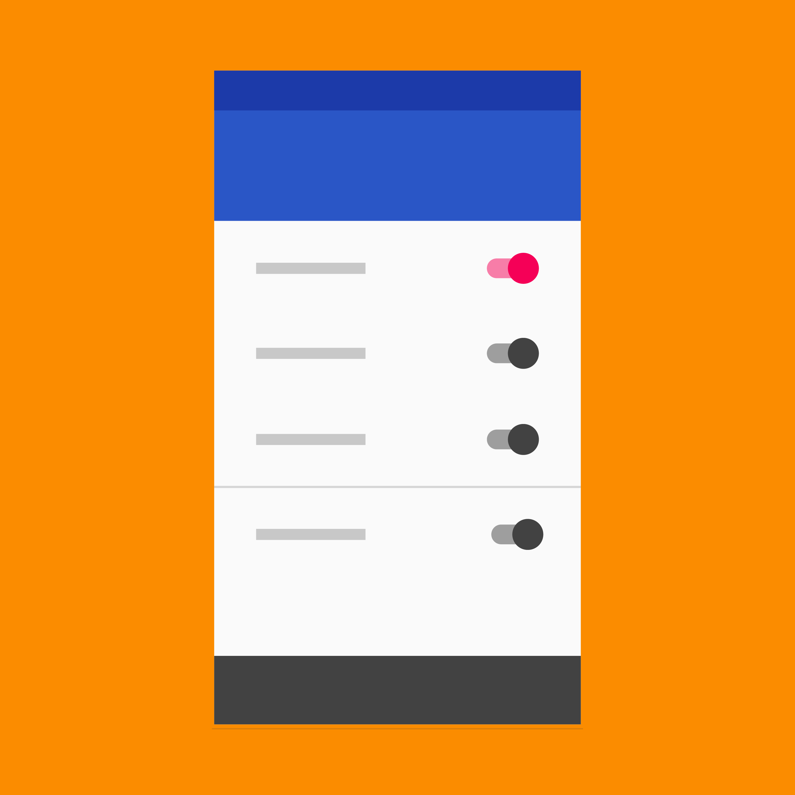

Application settings let users indicate their preferences for how an app or service should behave.
Place app settings under the “Settings” label in your app’s navigation.
Controls that belong in settings should capture user preferences and be infrequently accessed. They should either affect most users or provide critical support to a minority of users.
Placement options
Side navigation
Toolbar menu
Settings components
Labels
Secondary text
Switch or checkbox settings
Status
